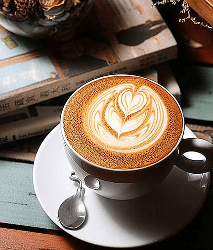
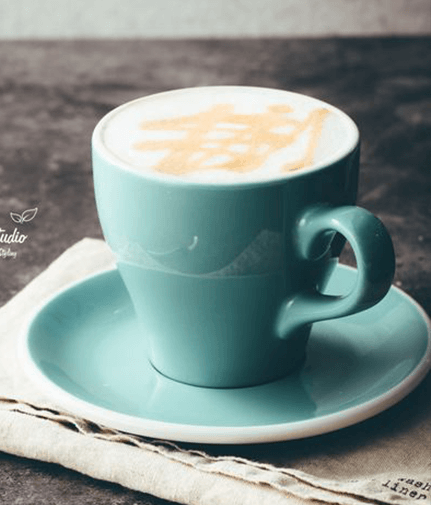
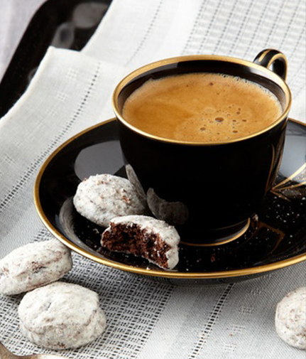

-
| 拿铁咖啡
Cafe Latte
-
| 卡布基诺
Cappuccino
-
| 摩卡咖啡
Mocha Coffe
-

这是1683年的故事。这一年, 土其大军第二次进攻维也纳。当时的维也纳皇帝奥博德一世与波兰国王奥古斯都二世订有攻守同盟, 波兰人只要得知这-消息, 增援大军就会迅速赶到。但问题是, 谁来突破士其人的重围去给波兰人送信呢? 曾经在土耳其游历的维也纳人柯奇斯基自告奋勇, 以流利的土耳其话骗过围城的土耳其军队, 跨越多瑙河，搬来了波兰军队。
奥斯曼帝国的军队虽然骁勇普战,在波兰大军和维也纳大军的夹击下，还是仓皇退却了，走时在城外丢下了大批军需物资，其中就有数十麻袋的咖啡豆穆斯林世界控制了几个世纪不肯外流的咖啡豆,就这样轻而易举地到了维也纳人手上。但是维也纳人不知道这是什么东西。只有柯奇斯基知道这是一 -种神奇的饮料。于是他请求把这数 十麻袋咖啡豆作为突围求救的奖赏，并利用这些战利饮料。于是他请求把这数 十麻袋咖啡豆作为突围求救的奖赏，并利用这些战利品在维也纳开设了一家咖啡馆 - -蓝瓶子。
开始的时候，咖啡馆的生意并不好。原因是欧洲人不像土耳其人那样,喜欢连咖啡渣一起喝下去。于是 聪明的柯奇斯基改变了配方过滤掉咖啡渣并加入大量牛奶--这就是如今咖啡馆里常见的"拿铁"咖啡的原创版本。
-

卡布奇诺咖啡的味道很好,但它的名称来历却更有学问, 一直是欧美研究文字变迁的最佳体材。Cappuccino此字的历史 ,足以说明一个字常常会因为看来像某样东西，最后被引申成其它字义，远远超出造字者原先用意听来似乎蛮复杂的。创设于一五二五年以后的圣芳济教会Capuchin)的修士都穿著褐色道袍,头戴一~顶尖尖帽子,圣芳济教会传到意大利时，当地人觉得修士服饰很特殊,就给他们取个Cappuccino的名字，此字的意大利文是指僧侣所穿宽松长袍和小尖帽,源自意大利文"头巾"即Cappuccino。
然而，老人爱喝咖啡,发觉浓缩咖啡、牛奶和奶泡混合后,颜色就像是修士所穿的深褐色道袍,于是灵机-动,就给牛奶加咖啡又有尖尖奶泡的饮料,取名为卡布奇诺(Cappuccino).英文最早使用此字的时间在一九四八年当时旧金山一篇报导率先介绍卡布奇诺饮料, -直到1990年以后，才成为世人耳熟能详的咖啡饮料。应该可以这么说Cappuccino咖啡这个字，源自圣芳济教会(Capuchin)和意大利文头巾(Cappucio) ,相信Cappuccino的原始造字者,做梦也没料到僧侣的道袍最后会变成一种咖啡饮料名称。卡布奇诺咖啡是意大利咖啡的一种变化,即在偏浓的咖啡上。
-

摩卡作为一一个世界上最早的也曾经是最大的咖啡贸易的港口而闻明于世位于埃塞尔比亚海峡对面的也门,埃塞尔比亚的咖啡也曾经通过也]摩卡港出口运输，摩卡港已经干枯了,但附近地区出产的咖啡还是习惯称之为摩卡。
哈拉尔(Harar)咖啡,这种咖啡生长在从达罗勒布(Darolebu)平原海拔900米到埃塞俄比亚东部高地山脉谢赫谢赫(Chercher)海拔2700米范围内的地区这些山脉确实为这些常年生长的咖啡豆提供了独一无二的特征:果实饱满呈长条状酸性适中,典型的摩卡爽口风味。哈拉尔(Harar)咖啡世界领先的优质咖啡;虽然品种产自国外但给人以亲切之感，口感绵润甜滑，给人以真正摩卡咖啡的丰富口感。哈拉尔咖啡几乎有最低的咖啡因含量,大约为1.13%。
哈拉尔不仅是世界上最好的的日晒咖啡之一,被誉为"旷 野的咖啡",而更像是一个美丽的传说。
埃塞俄比亚主要是是阿拉比卡原种;出口生豆:采用干燥法和水洗法的加工方法;主要产地集中于西南部、东部及南部;每年八月/- -月为收获期。